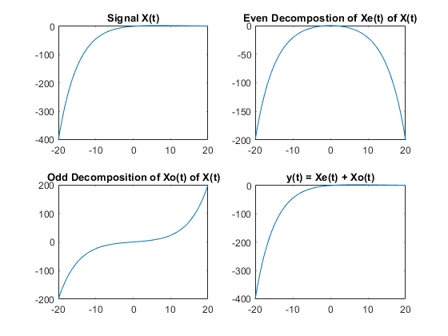

clear all; close all; clc; t = -20:0.1:20; % Create a time vector t from -20 to 20 with increments of 0.1 x = t.*exp(-0.15.*t); % Define the signal x(t) as t times the exponential function of -0.15t x_e = 0.5*(t.*exp(-0.15*t) - t.*exp(0.15*t)); % Compute the even decomposition of x(t) x_o = (x - fliplr(x))/2; % Compute the odd decomposition of x(t) y = x_e + x_o; % Compute the sum of the even and odd decompositions of x(t) figure; % Create a new figure subplot(2,2,1); % Define the first subplot in a 2x2 grid plot(t, x); % Plot the signal x(t) in the first subplot title('Signal X(t)'); % Add a title to the first subplot subplot(2,2,2); % Define the second subplot in a 2x2 grid plot(t, x_e); % Plot the even decomposition of x(t) in the second subplot title('Even Decompostion of Xe(t) of X(t)'); % Add a title to the second subplot subplot(2,2,3); % Define the third subplot in a 2x2 grid plot(t, x_o); % Plot the odd decomposition of x(t) in the third subplot title('Odd Decomposition of Xo(t) of X(t)'); % Add a title to the third subplot subplot(2,2,4); % Define the fourth subplot in a 2x2 grid plot(t, y); % Plot the sum of the even and odd decompositions of x(t) in the fourth subplot title('y(t) = Xe(t) + Xo(t)'); % Add a title to the fourth subplot %{ The code above first creates a time vector t and defines a signal x(t) as a function of t. It then decomposes the signal x(t) into its even and odd parts and computes the sum of the two parts. Finally, the code plots the original signal, the even and odd decompositions, and the sum of the two decompositions in a 2x2 grid of subplots. The output of this code is a figure with four subplots, each representing a different signal. The first subplot shows the original signal x(t). The second subplot shows the even decomposition of x(t). The third subplot shows the odd decomposition of x(t). The fourth subplot shows the sum of the even and odd decompositions of x(t). %}
